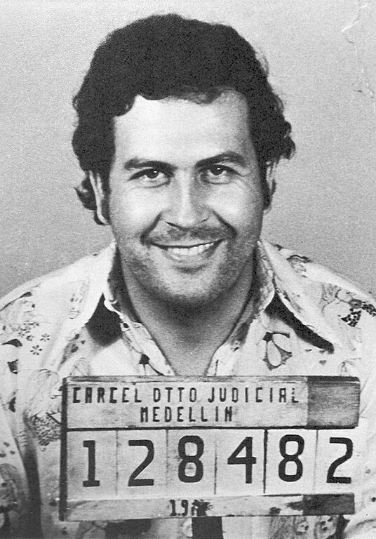

Narcotraficantes más importantes de la epoca
| Nombre |
Cartel/Organizacion |
Pais Origen |
Actividad Principal |
Estado en 1989 |
| Pablo Escobar
| Cartel de Medellín |
Colombia |
Tráfico de cocaína |
Activo, en guerra con el estado |
| Gonzalo Rodríguez Gacha |
Cartel de Medellín |
Colombia |
Tráfico de cocaína |
Activo, asesinado en 1989 |
| Jorge Luis Ochoa Vásquez |
Cartel de Medellín |
Colombia |
Tráfico de cocaína |
Activo, fugitivo |
Cifras de Exportacion de Cocaina a USA
- Pablo Escobar: 1,000 - 1,500 toneladas
- Jorge Luis Ochoa Vásquez: 1,000 y 1,500 toneladas
- Gonzalo Rodríguez Gacha: Cocaína 100 - 200 toneladas
Cifras de exportaciones de Cocaina a Mexico
- Pablo Escobar: 500 - 800 toneladas
- Gonzalo Rodríguez Gacha: 200 - 400 toneladas
- Jorge Luis Ochoa 300 - 500 toneladas
Países con Más Exportaciones de Drogas
- Colombia
- Drogas principales: Cocaína.
- Producción aproximada: 1,000 toneladas de cocaína anuales.
- Mexico
- Drogas principales: Cocaína, metanfetamina, marihuana, heroína.
- Producción aproximada: 300 - 500 toneladas de cocaína anuales; producción significativa de metanfetamina y marihuana.
- Afganistán
- Drogas principales: Heroína.
- Producción aproximada: 6,000 toneladas de opio anuales, equivalente a alrededor del 90% de la heroína mundial.
El Rey de la Cocaína: La Vida y Muerte de Pablo Escobar
Pablo Escobar fue un narcotraficante colombiano, líder del Cartel de Medellín,
que operó en las décadas de 1970 y 1980. Se le conocía como uno de los criminales más poderosos
y ricos de la historia, debido a su papel en el tráfico de cocaína hacia Estados Unidos.
Escobar era tanto temido como venerado en Colombia. Aunque fue responsable de una gran cantidad
de violencia y muerte, también financió proyectos de infraestructura y beneficencia en áreas pobres,
lo que le ganó el apoyo de muchos.
Pablo Escobar

Muertes más importantes asociadas a Pablo Escobar,
| Fecha |
Nombre |
Cargo/Relación |
| 22 de mayo de 1990 |
Luis Carlos Galán |
Político (Candidato presidencial) |
|
| 18 de octubre de 1989 |
Carlos Mauro Hoyos |
Ministro de Justicia |
| 9 de noviembre de 1989 |
Javier F. Peña |
Policía (Jefe de la Policía Nacional) |
| 21 de diciembre de 1989 |
Fernando Botero Artista |
(esposo de la hija de Escobar) |